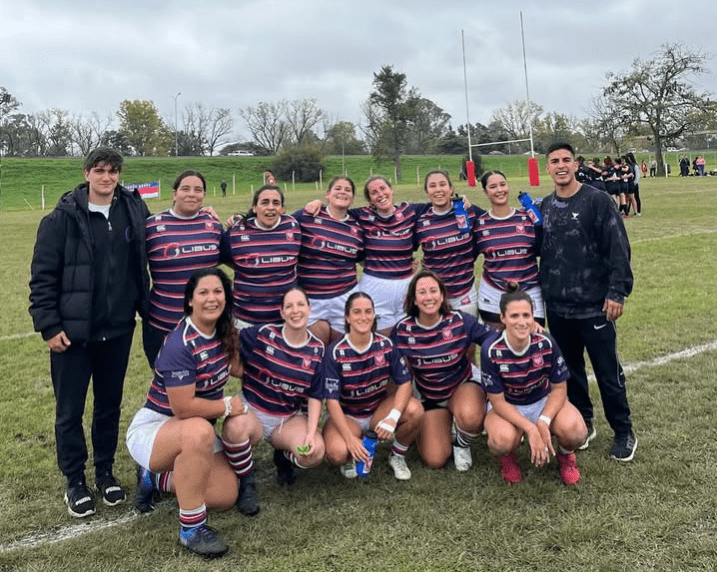

¡Histórico debut del rugby femenino! Don Bosco escribió su primera página en URBA
El Rugby Femenino Mayor escribió su primera página en URBA, con triunfo en la primera jornada del circuito 2025 de Seven.

El domingo 25 de mayo de 2025 quedó grabado en la historia del Ateneo. Ese día, el flamante Plantel Mayor de Rugby Femenino saltó por primera vez a la cancha en un partido oficial de la Unión de Rugby de Buenos Aires (URBA). No fue solo un partido: fue la coronación de un sueño colectivo y el inicio de una nueva era para el club.
El silbatazo inicial fue el punto de llegada de un camino de esfuerzo y dedicación recorrido durante los últimos dos años. Un camino que tuvo un motor inesperado: un grupo de madres.
Las madres pioneras
Eran madres de jugadores y jugadoras de las divisiones infantiles. Vieron que sus hijas tenían que dejar de jugar al rugby en Don Bosco al cumplir 14 años, la edad límite de los equipos mixtos según el reglamento, y decidieron que ese no podía ser el final.
Muchas de ellas nunca habían agarrado un ovalado. Aun así, se pusieron al hombro la misión de abrir las puertas al rugby femenino adulto en el club. Unas seis madres pioneras plantaron la semilla y trabajaron por espacios, visibilidad y oportunidades. Su compromiso fue el cimiento de este equipo.
Las 11 guerreras
Hoy ese esfuerzo se ve en las 11 jugadoras del Plantel Mayor Femenino, guiadas por sus entrenadores. Con sus botines sobre el césped de URBA no solo representan al club: cargan con la ilusión de todas las chicas que ahora ven un futuro rugbístico en Don Bosco más allá de los 13 años.
La emoción del debut quedó en las palabras de Caro, capitana, y Yamila, subcapitana, en un video compartido en las redes del club. Yamila dijo que fue “un orgullo tremendo participar” y que esto es empezar como corresponde. Caro dijo que “como primera experiencia fue más que positiva” y que sienta una base sólida para crecer.
Este debut marca un antes y un después. Es un triunfo del espíritu comunitario de Don Bosco, del coraje de esas madres que rompieron barreras y de la pasión y la disciplina de cada jugadora que viste la camiseta con orgullo.
Gracias, madres pioneras, por creerlo posible y abrir este camino. Su legado ya corre por la cancha.
Felicitaciones, Plantel Femenino Mayor, por este histórico primer paso. El club entero está con ustedes en cada tackle, en cada avance, en cada ruck. ¡Vamos Don Bosco!